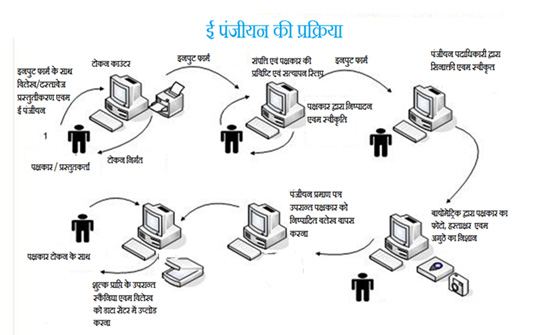

- प्रस्तुंतकर्ता/पक्षकार इनपुट फार्म में जानकारी को पूरी तरह से भरकर विलेख के साथ लगाकर पंजीयन कार्यालय में प्रस्तुत करेंगे।
- प्रस्तुतकर्त्ता की जानकारी प्रविष्टी के बाद टोकन नम्बार जनित किया जाकर प्रस्तुतकर्त्ता को प्रविसोनल टोकन नम्बकर दिया जाएगा।
- पंजीयन अधिकारी द्वारा दस्तावेज के परीक्षण एवं इनपुट फॉर्म के साथ मिलान के उपरांत विलेख ई-पंजीयन प्रक्रिया के लिए कम्प्यूटर-कांउटर पर ई पंजीयन की प्रिबिष्टि एवं तदोपरांत पावती के जरिये प्राप्त किया जायेगा।
- ईसके उपरांत संपत्ति, संरचना तथा पक्षकारों के व्यौंरों की प्रविष्टि की जाएगी।
- प्रस्तुतकर्त्ता/पक्षकार को उपरोक्त प्रविष्टियों का पृष्ठांकन स्वरुप सह घोषणा प्रपत्र का प्रिन्ट दिया जायेगा जिसे पक्षकार द्वारा निर्भुलता के आधार पर मिलान कर इलेक्ट्रोनिक राईटिंग पेन से हस्ताक्षरित सत्यापित किया जायेगा तथा सभी पक्षकार निष्पादन भी स्वीकार करेंगे।
- इसके पश्चांत कम्प्यूटर आपरेटर द्वारा इलेक्ट्रोनिक पद्धति से समस्तक पक्षकारों, गवाहों का बायोमेट्रीक डिवाइ्स से अंगुष्ठष छाप एवं वेब कैमरा से फोटो लिया जायेगा जिसे पंजीयन अधिकारी के समक्ष उनकी उपस्थिति में निष्पातदन स्वीवकारोक्ति पश्चा त् इलेक्ट्रोनिक राईटिंग पेन से सत्यािपित किया जाएगा।
- इसके उपरांत दस्ताकवेज में देय पंजीयन शुल्का संबंधी विवरणी जनित होने के पश्चाात पंजीयन अधिकारी के सहमती के बाद पक्षकार द्वारा शुल्कय की राशि जमा करने पर सत्या पन किया जाएगा।
- ईस पुरी प्रिक्रिया के दरमियाँ पूरी विलेख की स्कनिंग कर ली जाएगी।
- शुल्कर भुगतान की सम्पुश्ष्टि के बाद दस्तािवेज पंजीयन प्रमाण-पत्र जनित हो जायेगा।
- ई-पंजीयन प्रक्रिया पूर्ण होकर, मूल दस्तावेज पक्षकार को वापस किया जायेगा।
|
 |